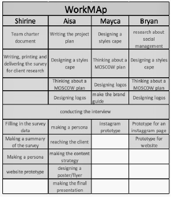
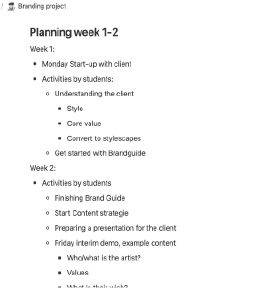

Project 1: Project 1 - Content strategy Project 1 - Final Presentation Project 1 - Documents / Further details about the project Competitor Analysis Second Project Presentation Description Second Project Presentation Project 3 - Content Strategy Project X - Project Plan Project X - Research Web accessibility
For the first project, I took on the role of group leader, which was a new and challenging
experience for me. Initially, I found myself expressing my opinions too strongly, which led me
to adjust my approach. Instead, I focused on facilitating communication within the group by creating
weekly and daily to-do lists on Notion, outlining workload maps, writing the content strategy, addressing any questions or
concerns about the project requirements, and also prepare the presentations was a job of mine.
One of the hardest things was to keep everything up to date in Notion, for example, I had to change the to-do list weekly, I had to share the
tasks from time to time, and I had to organize the documents so everyone was able to find what they needed. It might does not sound as something too complicated, but I have to state the fact that I also had a role as a designer and researcher for the project, which means I had to keep up with the work for that also
Regardless of the hard work, I might say that I did a good job since our group could work at a great pace,
and we could finish everything according to our MoSCoW plan.
Writing the content strategy was also a bigger assignment since I was not sure how to do that, therefor I did a few short research online,
where I searched for articles, which helped me to understand what should be included in a strategy like that, and I also asked for feedback about this topic from a Teacher,
to make sure it is well done and useful.
In the end, I think I did a good job since the final feedback that I got was great.
I attached the content strategy and the final presentation (which I also made for the group) below.
In addition to preparing presentations, for our Thursday lessons I made sure that we can showcase our work up to date, and for the final presentation
our final products are presented well (I attached the final presentation just below the content strategy).
At the end of the 1st group project, I also requested a meeting, where I asked my groupmates to share their feedback about each other
so everyone could freely share their opinion, which can help to let go of negative feelings and push us to learn our mistakes. At the
end of this meeting, I also offered my position as a group leader so that in the next group project someone else can try themselves out
as a leader.
In summery my main responsibility as a leader was to oversee all aspects of the project and ensure that tasks were being
completed efficiently. Rather than making unilateral decisions, I prioritized documentation
and collaboration, gathering and organizing the work contributed by my groupmates.
For an insight for the documentation, and the way I was thinking for the final presentation I attached a file below.
Project 2:
In the second project, we had to work for a client (Handpicked), that made a website for Breda.
Before we started brainstorming about how to reach our target audience (international students), we decided to
do a short research, on how other cities are connected to their target.
To of my groupmates chose a one-one city in The Netherlands, I personally wanted to choose something internationally,
therefore I did a research about Antwerp.
After this research, I (/we) learned that most of these cities, have a very strong Instagram page, with hashtags,
and consistent content, and all of them focus on a chosen theme (for example tourists, or fun activities).
You can read the whole research attached below (my part is on page 8 and 9).
For this Group Project, I got the task of creating a presentation that my group could present to the client.
After the first project we got feedback from a Teacher that our products and presentation were not consistent enough,
she said that we had great ideas but it doesn’t build up to one great outcome.
I learned from it and therefore I tried to design a presentation that merged into our whole idea of
making something young, fun, and fresh.
If you are interested in the flow of building this presentation, then read the attached document below.
Project 3:
In the third and final group project, or original team split into two smaller duos.
To make sure that throughout the weeks our project goes smoothly, I wrote a content strategy, so we have a clear vision of what
we have to deliver in the end.
I attached our content strategy below, where you can see what we did in this briefer project.
Project X:
The final project is a personal project, and because of that, I tried to strongly focus on the project management part, since no one would have led me.
To start to prepare everything in time I started to think and decide on an idea weeks ahead, and I looked for a coach in time, so I could make sure that
my subject could work out in the end. I tried to gather all of my ideas and make them into a whole, and to do that writing my project truly helped.
If you are interested in what the mentioned project is about you should read the document below.
The starting point of this project was the research phase. It was important because before putting together the survey, I needed some background information on Gen-Z and their social life.
So this initial research was crucial because it allowed me to approach the podcast and survey with a solid understanding of the topic.
Given the limited time available, I focused on reading as many articles as possible and summarizing the key points. This step was essential not only for building a foundation of knowledge but also because my own interest and questions about the topic evolved.
If you are interested in the information I gathered, you can read the document below.
Portfolio:
After one of my development lectures, where we learned about web accessibility, I decided to enhance my website a bit more.
First I checked what are the problems on my page with the help of WAVE (you can read the conclusions in the document below).
One of the main problems was that navigating between pages required clicking on buttons, which wasn't keyboard accessible. I decided to address this by enabling keyboard navigation.
Improving accessibility is a great way to be more inclusive and considerate of all users. It's not only a learning opportunity but also an ethical practice to ensure everyone can access and enjoy the content on my site.

